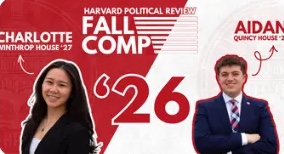

Programs First
Every program does great work. Every program should be seen doing it.
- Spotlighting and providing comms for all programs equally
- Highlighting individual members of the IOP
- Creating a Media Center open to every program
Candidate · IOP Communications Director
The IOP is one of a kind. It's time our comms matched that. I'm in this race to make information easier to find when you need it, make collaboration between programs effortless, and make members feel celebrated for the work they do. Let's take the IOP further, together.


Communications Director
Vote for one
The whole campaign in about a minute.
Aidan Zagel · IOP Communications Director
“The IOP is one of a kind. It's time our comms matched that.”— Aidan Zagel
I've always believed that the real value of the IOP stems from each and every one of our programs and coalitions, not from SAC or Exec.
I know firsthand how difficult the current system is to work within. As the Marketing Director for the HPR, I've experienced how difficult it is to get even basic support from the IOP in promoting events and our journalism. I've spoken to many of our program chairs and members, so I know this is not an uncommon story within the IOP, especially for smaller programs that get less attention.
It is this experience — mixed with frustration and hope — that has pushed me to run for IOP Comms Director. I know there is so much more the IOP could and should be doing to support each of our programs and members.
I'm ready to do the work to realize a better IOP, and I want each and every one of you to join me on this journey. If you have bold ideas, please share them. If you haven't been heard in the past, speak up now. I believe that we can build a better IOP, but only if we do it together.
Turnaround on photos and videos for every program
Home for every announcement, event, and contact: OneIOP
To templates, comms training, and a launched OneIOP
Spotlighted and supported equally
My platform is all about small common-sense changes that make your life easier.
Every program does great work. Every program should be seen doing it.
One shared look makes the IOP recognizable and saves every program from starting at zero.
Being an IOP member should feel like something.
Programs First means all of them, coalitions included. Click any one to see the full plan.
What comms doesOne look for every conference, from save-the-date to recap
What comms doesDebate promo and photos from every debate
What comms doesSpeaker promo and photos from every event
What comms doesEvent promo plus spotlights on the members leading the conversation
What comms doesEvent promo and spotlights on members' global work
What comms doesSpeaker promo and a consistent look for every discussion
What comms doesSpotlights that put members' policy proposals in front of the whole IOP
What comms doesGraphics that make Harvard Youth Poll results easy to share
What comms doesRecruiting graphics and spotlights on the teams' work
What comms doesForum promo that fills the room, and event photos back within 24 hours
What comms doesWeekly study group graphics from ready-made templates, done fast
What comms doesSpotlights on the student founders and the startups they launch
What comms doesRecruiting posts for new teachers and spotlights on the people in the classroom
What comms doesRecruiting posts for new tutors and stories from the program
What comms doesTurnout campaigns that reach every IOP member at once
What comms doesNew issues cross-promoted across every IOP channel
What comms doesWorkshop promo plus templates for campaign-style graphics
What comms doesEvent promo with a look as creative as the artists you bring in
What comms doesEvent promo and an equal place in IOP comms
What comms doesEvent promo and spotlights on the conversations you lead
What comms doesEvent promo and spotlights on members' service
Program and coalition list from iop.harvard.edu
Six things that change with Aidan as Comms Director.
Spread across emails, group chats, and Instagram
OneIOP: one internal site for announcements, events, and contacts
Long emails that are easy to skip
Fewer emails, and clearer ones, with the details on OneIOP
Every program designs from scratch
A shared brand template plus custom templates for each program
Waiting on content long after the event
24-hour turnaround, plus a Media Center open to every program
Great work happens and nobody hears about it
Member spotlights and a mid-semester all-program presentation
Hard to know where to start
Welcome kits, door drops, and opening-day info out early
From audit to launch, month by month. Scroll to run the clock.
Learn what every program needs before changing anything.
What you'll noticeComms reaching out to your program first, asking what you need.
Build the tools programs will use all semester.
What you'll noticeTemplates in your hands and trainings on the calendar.
Put it all in front of members.
What you'll noticeOne place to find everything, and your program in the spotlight.
What's true by the end of February.
What you'll noticeFewer emails, faster photos, and comms that feel like the IOP.
Bring more people in, and give them reasons to stay.
What I've built so far, and where it's headed.
Now a sophomore in Quincy House, concentrating in Government and Economics.
I run marketing and the comp for the largest political publication at Harvard College, including campaigns like Battle for the Senate and Fall Comp '26.
Working on how the Political Union shows up to the rest of campus, and photographing its debates.
Shooting for HPU, the HMC Boston 2027 board and other student organizations, and getting photos back fast.
Bringing all of it to the IOP: Programs First, OneIOP, the Comms Playbook and Member Perks.
Voting opens at 12:01am. This is where you come in.
Design and photography already out in the world.

Click any piece to see it larger
Plus what every program gets: Comms Playbook templates, comms training, one request form on OneIOP, and event photos back within 24 hours.
The short answers. Ask me for the long ones.
One internal website where every announcement, event, and contact lives in one place. It gets piloted with programs in January and launches in February. Try the demo to see how it would work.
No, fewer. OneIOP holds the details, so emails can be short and only go out when they matter.
Every program gets its own templates built on a shared brand, comms training for its comms team, and office hours. The Media Center will be open to every program.
A shared photo, video, and design resource that any program can use, so good content doesn't depend on which program you're in. Work on it starts in February.
Program-specific merch, welcome kits and door drops for new members, member spotlights, and photos and videos back within 24 hours.
I already do this work. At HPR I run marketing and the comp, and I shoot photos for HPU, the HMC Boston 2027 board, and other student orgs. Some of it is in The Work above.
No. Instagram stays the IOP's public face. OneIOP is for members: the one place to find what's happening and who to ask.
Fewer emails, faster photos and video, and programs telling me comms got easier. Mid-semester check-ins are built into the plan so I hear it directly.
All of them, plus the four IOP coalitions. Every program, from the JFK Jr. Forum to Citizenship Tutoring, gets the same templates, training, and 24-hour photo turnaround. The full list is in Every Program above.
Email or text me anytime, book 15 minutes on my calendar, or come to comms office hours once they start in January. The first thing I'll do in December is audit IOP comms, so tell me what's broken.